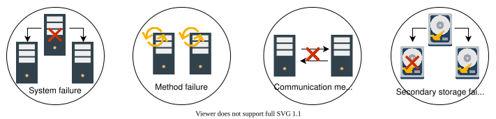
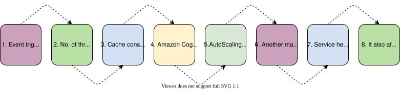
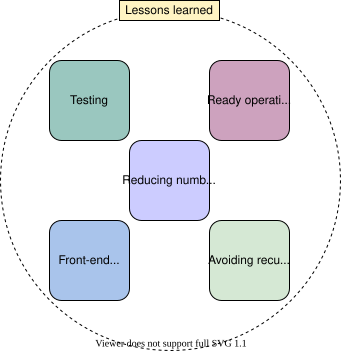

39. Spectacular Failures
Introduction to Distributed System Failures
Introduction to Distributed System Failures
Learn about the failures in distributed systems and the importance of independent vantage points.
Introduction#
Once in a while, we encounter the failure of a service that’s a household name, and individuals and businesses react to them. As system designers, we might wonder how carefully designed services that have been perfected over years by experienced teams can also fail.
This chapter discusses some of the major failures of well-known services and the measures that can be taken to mitigate such failures.
The following two factors contribute to failures:
-
Diverse users: Most services have a vibrant user community, and as their needs evolve, so do the software products. If a software doesn’t update in the way it provides new features and services, it will become stable over time. However, it might not have the features customers want.
-
Complex systems: Systems are complex, and they usually have emergent properties where the sum of system components is more complex than the individual pieces.

Types of failure in distributed systems#
Most modern services are designed in such a way that failures are contained, and others might be localized for some users. Let’s explore the types of failures we can observe in the distributed systems.
-
System failure: A software or hardware failure is the most common cause of system failure. The contents in the primary memory are lost when a system fails. However, the data in secondary storage or replicas remains unaffected. The system reboots during such a breakdown.
-
Method failure: Such failures suspend the working of distributed systems. It may also make the system execute the processes incorrectly or enter a deadlock state.
-
Communication medium failure: Such failures occur when one component or service of a system can’t reach the other internal or external entities.
-
Secondary storage failure: In such failures, the secondary storage or replicas are down. The data in these nodes becomes inaccessible, so primary nodes need to generate another replica to ensure reliability and fault tolerance.

Vantage points#
Something is always failing for large services. It’s preferred to have a graceful degradation so that only a small portion of users are impacted for a short time. Therefore, we need globally dispersed vantage points to independently see the service status.
Note: Many independent services, such as Downdetector, exist for crowd-sourced problem reporting. It’s interesting to note that if we visit such a service and see the status of our favorite applications, we’ll see that there’s always someone in the world facing some service problem.
Importance of independent service providers#
One of the design goals of the original Internet was to provide resilience so that if one part fails, the rest can still operate.
With the emergence of a handful of service providers over the last decade, critics have raised concerns about such centralization and the potential impacts of failures. Most companies provide some kind of dashboard to enable users to see the service status. However, some failures might even knock out these dashboards. Affected companies then communicate to their customers via services like Twitter to announce the updates. Independent third-party services are valuable for failure detection and status dissemination.
Note: The broader concept here is to use independent failure domains. A failure domain is a concept where anything failing inside a domain or network shouldn’t affect other components and services in other domains. At times, we say that two domains are independent if they’re outside the blast radius of each other.

In the following lessons, we’ll discuss the failures of well-known services by giant companies, the causes of failures, and what mitigation techniques can be used to avoid these failures. Although failures are a great way to learn what went wrong and what the original designers could do to avoid such failures, we’d like to prevent them from occurring at all.
Facebook, WhatsApp, Instagram, Oculus Outage
Facebook, WhatsApp, Instagram, Oculus Outage
Learn the causes of a major Facebook outage and how to avoid them.
We'll cover the following
In October 2021, Facebook experienced a global outage for about six hours, affecting its other affiliates, including Messenger, WhatsApp, Mapillary, Instagram, and Oculus. Popular media reported the impact of this failure prominently. The New York Times reported the following headline: “Gone in Minutes, Out for Hours: Outage Shakes Facebook.”
According to one estimate, this outage cost Facebook about $100 million in revenue losses and many billions due to the declining stock of the company.
Let’s look at the sequence of events that caused this global problem.
The sequence of events#
The following sequence of events led to the outage of Facebook and its accompanied services:
- A routine maintenance system was needed to find out the spare capacity on Facebook’s backbone network.
- Due to a configuration error, the maintenance system disconnected all the data centers from each other on the backbone network. Earlier, an automated configuration review tool was used to look for any issues in the configuration, but tools like these aren’t perfect. In this specific case, the review tool missed the problems present in a configuration.
- The authoritative domain name systems (DNSs) of Facebook had a health check rule that if it couldn’t reach Facebook’s internal data centers, it would stop replying to client DNS queries by withdrawing the routes.
- When the networks routes where Facebook’s authoritative DNS was hosted were withdrawn, all cached mapping of human-readable names to IPs soon timed out at all public DNS resolvers. When a client resolves www.facebook.com, the DNS resolver first goes to one of the root DNS servers, which provides a list of authoritative DNS servers for
.com. The resolver connects to one of them, and then they provide IPs for the authoritative DNS servers for Facebook. However, after route withdrawal, it was impossible to reach them. - Then, no one was able to reach Facebook and its subsidiaries.
The slides below depict the events in pictorial form.
Analysis#
Some of the key takeaways from the series of events shown above are the following:
- From common activity to catastrophe: The withdrawal or addition of the network routes is a relatively common activity. The confluence of bugs (first a faulty configuration, and then a bug in an audit tool not able to detect such a problem) triggered a chain of events, which resulted in cascading failures. A cascading failure is when one failure can trigger another failure, ultimately bringing the whole system down.
- Reasons for slow restoration: It might seem odd that it took six hours to restore the service. Wasn’t it easy to reannounce the withdrawn routes? At the scale that Facebook is operating on, rarely is anything done manually, and there are automated systems to perform changes. The internal tools probably relied on the DNS infrastructure, and when all data centers are offline from the backbone, it would have been virtually impossible to use those tools. Manual intervention would have been necessary. Manually bootstrapping a system of this scale isn’t easy. The usual physical and digital security mechanisms that were in place made it a slow process to intervene manually.
- Low probability events can occur: In retrospect, it might seem odd that authoritative DNS systems disconnect themselves if internal data centers aren’t accessible. This is another example where a very rare event, such as none of the data centers being accessible, happened, triggering another event.
- Pitfalls of automation: Facebook has been an early advocate of automating network configuration changes, effectively saying that software can do a better job of running the network than humans, who are more prone to errors. However, software can have bugs, such as this one.
Lessons learned#
- Ready operations team: There can be a hidden single point of failure in complex systems. The best defense against such faults is to have the operations team ready for such an occurrence through regular training. Thinking clearly under high-stress situations becomes necessary to deal with such events.
- Simple system design: As systems get bigger, they become more complex, and they have emergent behaviors. To understand the overall behavior of the system, it might not be sufficient to understand only the behavior of its components. Cascading failures can arise. This is one reason to keep the system design as simple as possible for the current needs and evolve the design slowly. Unfortunately, there’s no perfect solution to deal with this problem. We should accept the possibility of such failures, perform continuous monitoring, have the ability to solve issues when they arise, and learn from the failures to improve the system.
- Contingency plan: Some third-party services rely on Facebook for single sign-on. When the outage occurred, third-party services were up and running, but their clients were unable to use them because Facebook’s login facility was also unavailable. This is another example of assuming that some service will always remain available and of a hidden single point of failure.
- Hosting DNS to independent third-party providers: There are a few services that are so robustly designed and perfected over time that their clients start assuming that the service is and will always be 100% available. The DNS is one such service, and it has been very carefully crafted. Designers often assume that it will never fail. Hosting DNS to independent third-party providers might be a way to guard against such problems. DNS allows multiple authoritative servers, and an organization might have many at different places. Although, we should note that DNS at Facebook’s scale isn’t simple, is tightly connected to their backbone infrastructure, and changes frequently. Delegating such a piece to an independent third party is expensive, and it might reveal internal service details. So, there can be a trade-off between business and robustness needs.
- Trade-offs: There can be some surprising trade-offs. An example here is the need for data security and the need for rapid manual repair. Because so many physical and digital safeguards were in place, manual intervention was slow. This is a catch-22 situation—lowering security needs can cause immense trouble, and slow repair for such events can also make it hard for the companies. The hope is that the need for such repairs is a very rare event.
- Surge in load: The failure of large players disrupts the entire Internet. Third-party public resolvers, such as Google and Cloudflare, saw a surge in the load due to unsuccessful DNS retries.
- Resuming the service: Restarting a large service isn’t as simple as flipping a switch. When the load suddenly becomes almost zero, turning them up suddenly may lead to a many megawatt uptick in power usage. This might even cause issues for the electric grid. Complex systems usually have a steady state, and if they go out of that steady state, care must be taken to bring them back.
Point to Ponder
Question
What can we do to safeguard against the kinds of faults experienced by Facebook?
AWS Kinesis Outage Affecting Many Organizations
AWS Kinesis Outage Affecting Many Organizations
Learn the causes and analysis of a major AWS Kinesis outage.
We'll cover the following
Amazon Kinesis allows us to aggregate, process, and analyze real-time streaming data to get timely insights and react quickly to the information it provides. It continuously captures gigabytes of data from hundreds of thousands of sources per second. The Kinesis service’s frontend handles authentication, throttling, and distributes workloads to its back-end “workhorse” cluster via database sharding. On November 25, 2020, the Amazon Kinesis service was disrupted in the US-East-1 (Northern Virginia) region, affecting thousands of other third-party services. The failure was significant enough to take out a large portion of Internet services.
Sequence of events#
-
According to Amazon, the event was triggered by adding a small capacity to the AWS front-end fleet of servers, scheduled from 2:44 a.m. PST to 3:47 a.m. PST.
-
The addition of the new capacity caused all the servers in the fleet to exceed the maximum number of threads that are allowed by an operating system configuration.
-
Due to exceeding the limit on threads, cache construction was failing to complete, and front-end servers were ending with useless shard maps that left them unable to route requests to back-end clusters.
-
Other primary Amazon services also stopped working, including Amazon Cognito and CloudWatch.
-
Kinesis Data Streams is used by Amazon Cognito to gather and analyze API usage patterns. Because of the long-running issue with Kinesis Data Streams, a hidden error in the buffering code—which is required for Cognito services—caused the Cognito web servers to start blocking on the backlogged Kinesis Data Stream buffers. As a result, Cognito customers witnessed an increase in API failures and latencies for Cognito user pools and identity pools, making it impossible for external users to authenticate or receive temporary AWS credentials.
-
CloudWatch uses Kinesis Data Streams to process metrics and log data. The
PutMetricDataandPutLogEventsAPIs in CloudWatch encountered higher error rates and latencies, and alerts were set toINSUFFICIENT DATA. The great majority of metrics were unable to be processed due to higher error rates and latencies. When CloudWatch was experiencing these greater issues, internal and external clients couldn’t persist all metric data to the CloudWatch service.
-

-
Due to the problems with CloudWatch metrics, two services were also impacted. First, AutoScaling policies that rely on CloudWatch measurements suffered delays. Second, Lambda experienced the effect. Currently, posting metric data to CloudWatch is required as a part of Lambda function invocation. If CloudWatch is unavailable, Lambda metric agents are meant to buffer metric data locally for a period of time. The metric data buffering became so large that it generated memory congestion on the underlying service hosts utilized for Lambda function invocations, leading to higher error rates.
-
Increased API failures and event processing delays plagued CloudWatch Events and EventBridge. EventBridge is used by Elastic Container Service (ECS) and Elastic Kubernetes Service (EKS) to drive internal processes for managing client clusters and jobs. This has an impact on new cluster provisioning, existing cluster scaling, and task deprovisioning.
-
Apart from the service issues, Amazon also experienced delays in communicating service status to their customers. Amazon uses two dashboards for communication with their customers, Service Health Dashboard and Personal Health Dashboard. The Service Health Dashboard informs all customers of events, such as the current one. It was down because of its dependency on Cognito, which was impacted by this event.
-
Apart from the disruption in the Amazon services, this also had a ripple effect on thousands of third-party online services, applications, and websites. This includes Adobe Spark, Acorns, Coinbase, Washington Post, and hundreds of such services.
Analysis#
-
Complexity of enhancing scalability: We’ve been stressing the need for horizontal scalability in all of our design problems. This outage event shows that in practice, adding more capacity to a serving cluster so that we don’t deny any client requests can be challenging and can have unintended side effects.
-
The need for a trained team: Training the production team to deal with such unforeseen situations is a challenging task, but it’s worth it and can result in expedited recovery. In addition, randomly restarting the front-end servers and suspecting that the memory pressure causes the problem alludes to the challenges of reaching the root causes under the stress of time.
-
Reading from authoritative servers during bootstrap: During the bootstrap process, it’s a good idea to take data from the authoritative metadata store rather than from the front-end servers to reduce the impact of such failures.
-
Identification of faults in initial stages: There’s a need for automated processes to identify the causes of failure within the initial stages of its occurrence.
-
Proper testing mechanisms can reduce the severity of the fault: The new capacity that’s causing the servers in the fleet to exceed the maximum number of threads is a potential bug that should have been fixed earlier than before restarting the servers. This reflects the inability to properly test the system. There should be a kind of simulator to test all cases before deploying additional capacity into the fleet.
- Finding potential bugs before planned events: The issue with Kinesis Data Streams triggered a latent bug in the buffering code that caused the Cognito web servers to begin to block on the backlogged Kinesis Data Stream buffers. The potential bugs should be identified and fixed before critical planned events, such as adding capacity or software and hardware maintenance.
- Adopting automated processes for resource allocation: The Cognito team sought to reduce the effect of the Kinesis faults in the early phases of the event by providing extra capacity and therefore boosting their ability to buffer calls to Kinesis. Instead of manually assigning capacity, there should be an automated system to increase or reallocate capacity in such events.
Lessons learned#
-
Testing: Proper testing and identifying the potential bugs are essential. In this case, the number of threads exceeding a maximum limit defined by the operating system seems to be a possible bug.
-
Ready operations team: A bug bringing an overall system to a halt is the single point of failure, which is possible in a complex system. The production team should be trained and ready for such events.
-
Reducing number of servers: To get significant headroom in the thread count used as the total threads, there’s a need to move to more powerful CPU and memory servers. This will reduce the total number of servers and the threads required by each server to communicate across the fleet. Having fewer servers means that each server maintains fewer threads. Amazon is adding fine-grained alarming for thread consumption in the service.
-
Front-end fleet changes: Several changes are required to radically improve the cold start time for the front-end fleet. Moreover, the front-end server cache needs to be moved to a dedicated fleet.
-
Avoiding recurrent failures: To avoid recurrent failures in the future, extensive AWS services, like CloudWatch and others, must be moved to a separate, partitioned front-end fleet.

Point to Ponder
Question
What possible measures should Amazon have adopted to safeguard against the kind of failures they faced in Kinesis Data Streams?
AWS Wide Spread Outage
AWS Wide Spread Outage
Learn how an AWS outage halted services for individual users and businesses across the globe.
We'll cover the following
Introduction#
Several Amazon services and other services that depend on AWS were disrupted by an outage incident that spanned more than eight hours on Tuesday, December 7, 2021, at approximately 7:35 a.m. PST. The incident impacted everything from home consumer products to numerous commercial services.
This hours-long outage made headlines in the popular media, such as this one from the Financial Times: “From angry Adele fans to broken robot vacuums: AWS outage ripples through the US.” The outage affected millions of users worldwide, including individuals who were using the AWS online stores and other businesses that relied heavily on AWS for providing their services.
The disruption caused by AWS emphasized the need for a decentralized Internet where services don’t rely on a small number of giant companies. According to Gartner, 80% of the cloud market is handled by just five companies. Amazon, with a 41% share of the cloud computing market, is the largest.
Outages like the one above remind us of famous Lamport’s quip: “A distributed system is one in which the failure of a computer you didn’t even know existed can render your own computer unusable.”
Sequence of events#
- An automated action to expand the capacity of one of the AWS services near the main AWS network elicited unusual behavior from a significant number of customers within the internal network.
- As a result, there was a significant increase in connection activity, which swamped the networking equipment that connected the internal network to the main AWS network.
- Communication between these networks got delayed. These delays enhanced latency and failures for services interacting between these networks, leading to a rise in retries and ping requests.
- As a result, the devices connecting the two networks experienced constant overload and performance difficulties.
- This overload instantly affected the availability of real-time monitoring data for AWS internal operations teams, hampering their ability to identify and remedy the cause of the congestion.
- Operators relied on logs to figure out what was going on and initially observed heightened internal DNS failures.
The following slides show the series of events that led to the outage.
Analysis#
- Hampered AWS services: The networking difficulties affected a variety of AWS services, impacting customers that utilized these service capabilities. Since the primary AWS network remained unaffected, certain client applications that don’t depend on these capabilities suffered relatively minor consequences as a result of this occurrence. AWS users, such as Amazon RDS, EMR, and Workspaces, were unable to generate new resources due to the inability of the system to launch new EC2 instances.
- Impaired control plane: Apart from the AWS services, the AWS control planes that are used for establishing and managing AWS resources were also impacted. These control planes take advantage of internal network-hosted services. For example, EC2 instances weren’t affected by this event, but EC2 APIs suffered from increased latency and error rates.
- Slow restoration: Since DNS is the basis for all communication across the web, operators focused on moving the internal DNS traffic away from congested areas of the network in order to improve availability. However, since monitoring services were unavailable, operators had to identify and disable major sources of traffic manually. This further improved the availability of services.
- Elastic Load Balancers (ELB): Current Elastic Load Balancers were unaffected by the incident. However, the rising API error rates and latencies for the ELB APIs resulted in longer provisioning times for new load balancers.
Lessons learned#
- Independent communication system: While the intention of having an internal network that’s separate from the main network is the right idea, they weren’t truly independent. A sequence of events highlighted their dependency. Finding such dependencies is crucial to truly benefit from independent networks for internal service use and external client use.
- Contingency plan: Although AWS takes measures to prepare its infrastructure for sudden surges in customer requests or power usage, the organization still found itself in a difficult situation due to the unusual severity of the failure. Investing in greater risk-based contingency planning benefits organizations during times of crisis.
- Ready operations team: A bug bringing an overall system to a halt is a single point of failure, which is possible in a complex system. The production team should be trained and ready for such events.
- Multiple cloud computing providers: Organizations can replicate their operations among many cloud computing providers so that no single failure knocks them out of action. However, this is easier said than done. An alternative approach is to employ different regions of the same provider for various purposes.
- Testing: Carrying out proper testing and identifying the potential bugs are both essential. In this case, overwhelming the network devices resulted in communication delays between these networks.
Point to Ponder
Question
What can we do to safeguard against the series of faults experienced by Amazon?